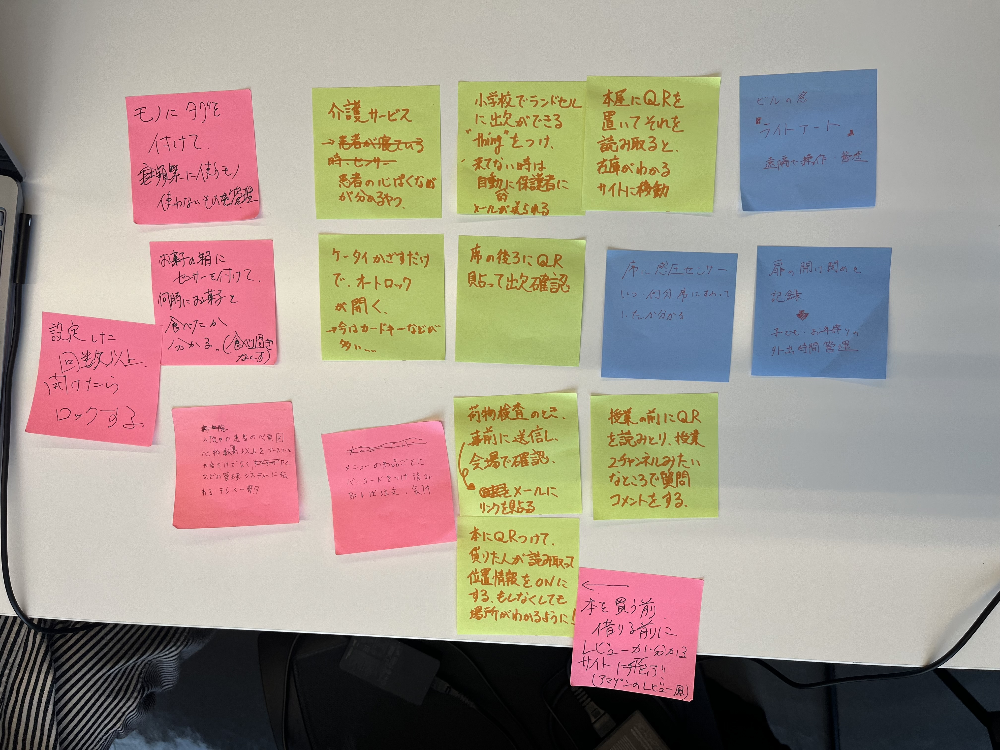
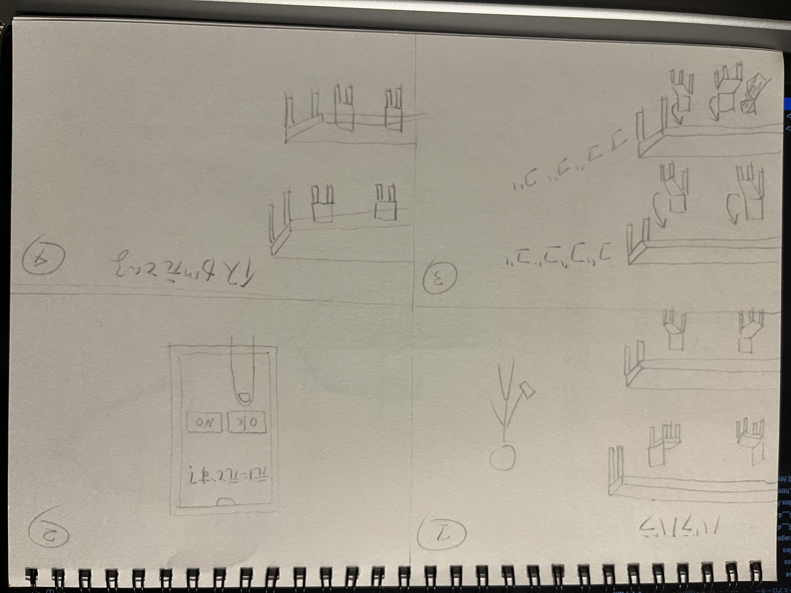

<div>
    <h1>IoTサービス</h1><br>
   
   <h2>グループワークした内容（ポストイット画像）</h2><br>
   <br><br>

   <h2>自分で考えたアイディア（スケッチ）</h2>
   <br><br>
   <h3>説明文</h3><br>
   椅子や机をネットワークに繋げる事によって、元にあったところ<br>
   （あらかじめ決めた位置）にボタン一つで戻ってくれる。


    


</div>